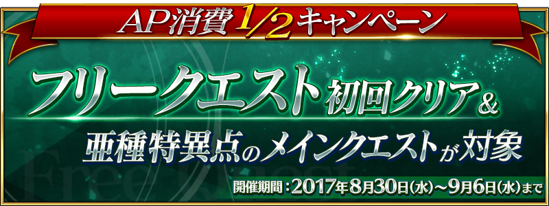

舉辦自由關卡初次通過與亞種特異點主線關卡的AP消耗1/2宣傳活動！
◆舉辦期間◆
2017年8月30日(三) 17:00～9月6日(三) 11:59
※已通過的自由關卡為對象外。
※強化關卡、幕間物語、曜日關卡為對象外。
自由關卡初次通過的AP消耗變成1/2！
還留有未通過的自由關卡的玩家，無論如何藉此機會通過吧！
◆對象關卡◆
・從特異點F至第七特異點與亞種特異點的全部自由關卡對象(只限初次通過)
※已通過的自由關卡為對象外。
※在戰鬥中撤退的話，直到通過關卡前的AP消耗依舊是1/2。
※強化關卡、幕間物語、曜日關卡已通過的自由關卡為對象外。
亞種特異點全部的主線關卡的AP消耗變成1/2！
藉此機會通過亞種特異點的主線關卡吧！
◆對象關卡◆
・亞種特異點Ⅰ 的主線關卡
・亞種特異點Ⅱ 的主線關卡
※在戰鬥中撤退的話，直到通過關卡前的AP消耗依舊是1/2。
※由於在2017年7月31日(一)舉辦的「FGO Fes. 2017 ～2nd Anniversary～」的宣傳活動3，第1部的主線關卡AP消耗1/2宣傳活動變成永久，第1部的主線關卡為本宣傳活動的對象外。